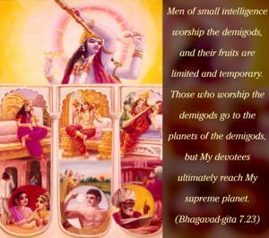
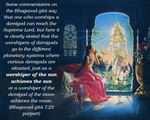
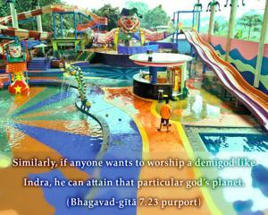
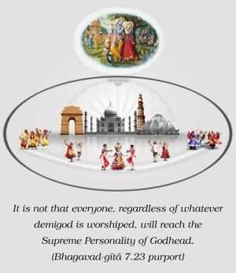

Men of small intelligence worship the demigods, and their fruits are limited and temporary. Those who worship the demigods go to the planets of the demigods, but My devotees ultimately reach My supreme planet.




Some commentators on the Bhagavad-gītā say that one who worships a demigod can reach the Supreme Lord, but here it is clearly stated that the worshipers of demigods go to the different planetary systems where various demigods are situated, just as a worshiper of the sun achieves the sun or a worshiper of the demigod of the moon achieves the moon. Similarly, if anyone wants to worship a demigod like Indra, he can attain that particular god’s planet. It is not that everyone, regardless of whatever demigod is worshiped, will reach the Supreme Personality of Godhead. That is denied here, for it is clearly stated that the worshipers of demigods go to different planets in the material world but the devotee of the Supreme Lord goes directly to the supreme planet of the Personality of Godhead.
Here the point may be raised that if the demigods are different parts of the body of the Supreme Lord, then the same end should be achieved by worshiping them. However, worshipers of the demigods are less intelligent because they don’t know to what part of the body food must be supplied. Some of them are so foolish that they claim that there are many parts and many ways to supply food. This isn’t very sanguine. Can anyone supply food to the body through the ears or eyes? They do not know that these demigods are different parts of the universal body of the Supreme Lord, and in their ignorance they believe that each and every demigod is a separate God and a competitor of the Supreme Lord.
Not only are the demigods parts of the Supreme Lord, but ordinary living entities are also. In the Śrīmad-Bhāgavatam it is stated that the brāhmaṇas are the head of the Supreme Lord, the kṣatriyas are His arms, the vaiśyas are His waist, the śūdras are His legs, and all serve different functions. Regardless of the situation, if one knows that both the demigods and he himself are part and parcel of the Supreme Lord, his knowledge is perfect. But if he does not understand this, he achieves different planets where the demigods reside. This is not the same destination the devotee reaches.
The results achieved by the demigods’ benedictions are perishable because within this material world the planets, the demigods and their worshipers are all perishable. Therefore it is clearly stated in this verse that all results achieved by worshiping demigods are perishable, and therefore such worship is performed by the less intelligent living entity. Because the pure devotee engaged in Kṛṣṇa consciousness in devotional service of the Supreme Lord achieves eternal blissful existence that is full of knowledge, his achievements and those of the common worshiper of the demigods are different. The Supreme Lord is unlimited; His favor is unlimited; His mercy is unlimited. Therefore the mercy of the Supreme Lord upon His pure devotees is unlimited.